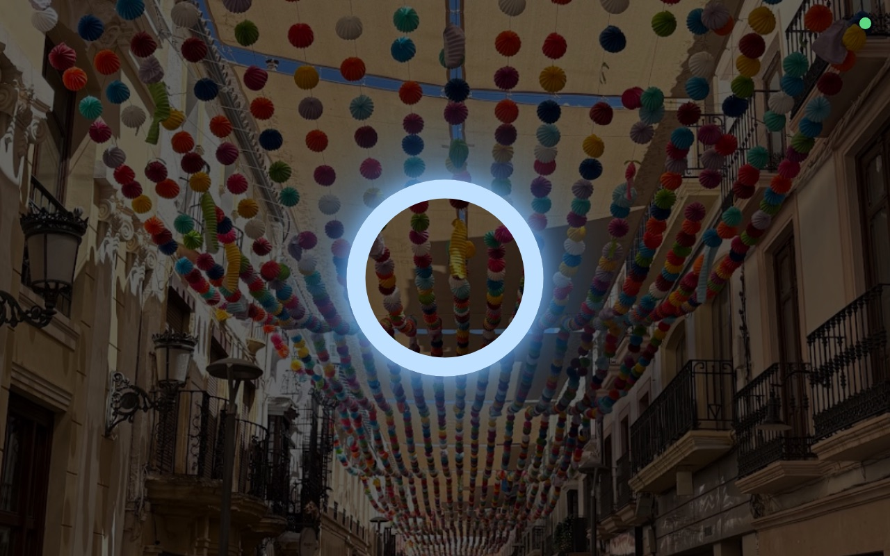
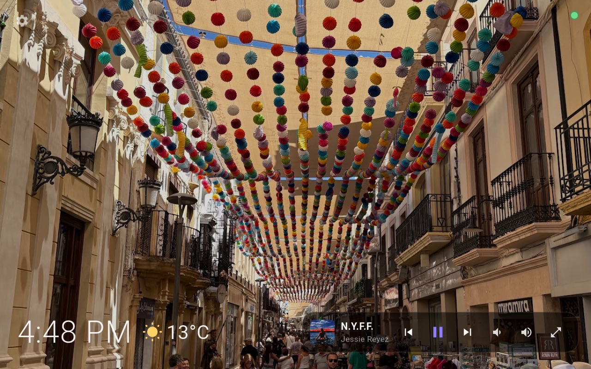
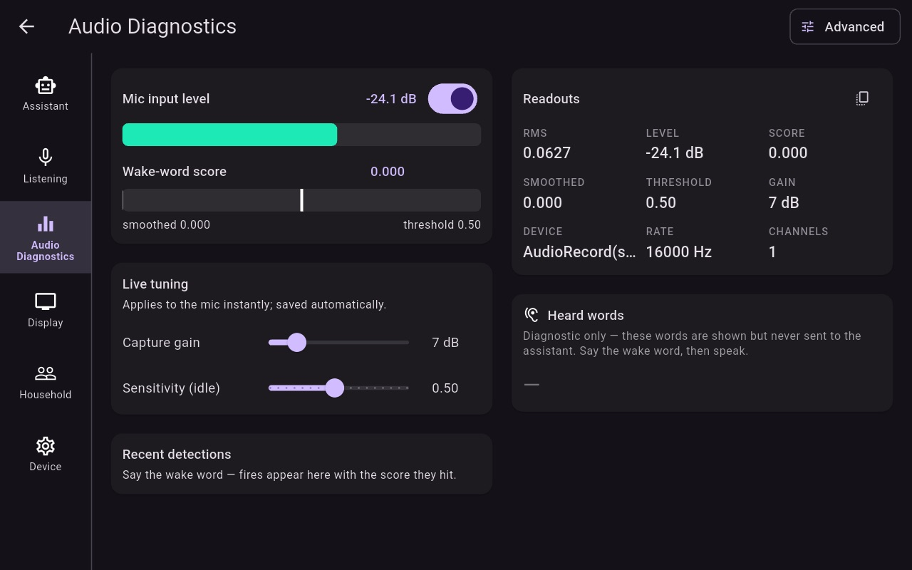
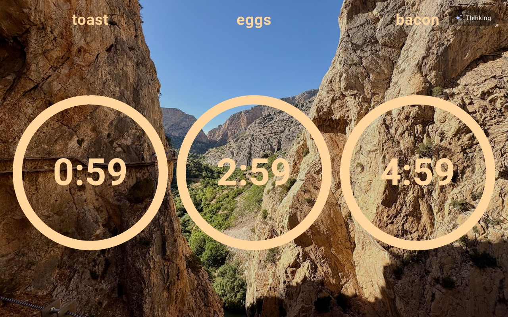
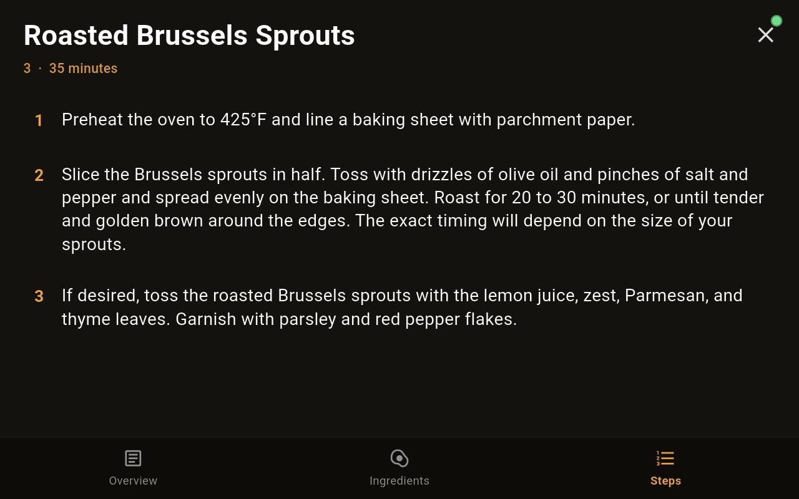
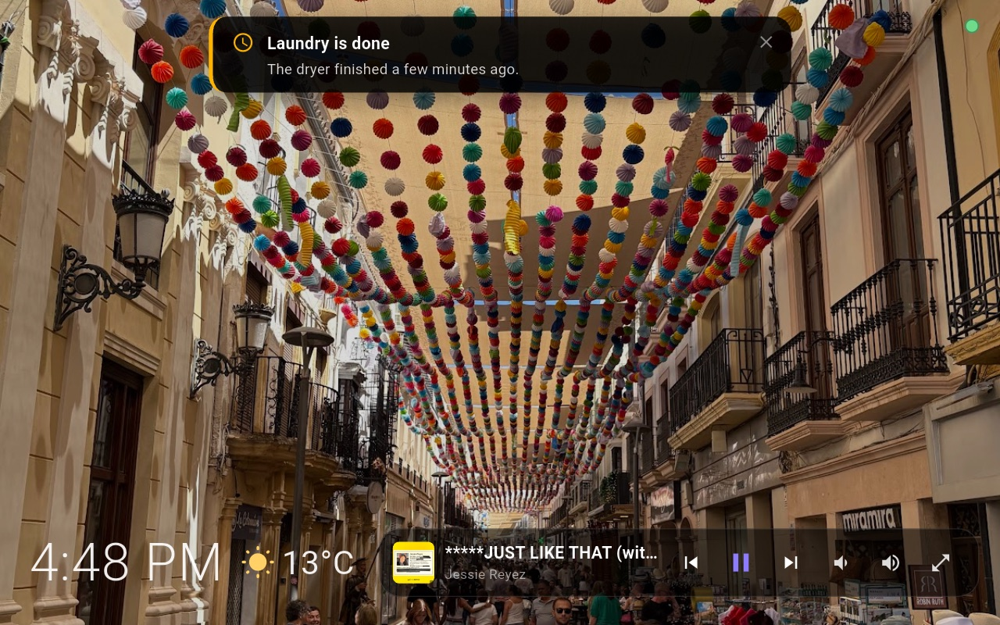
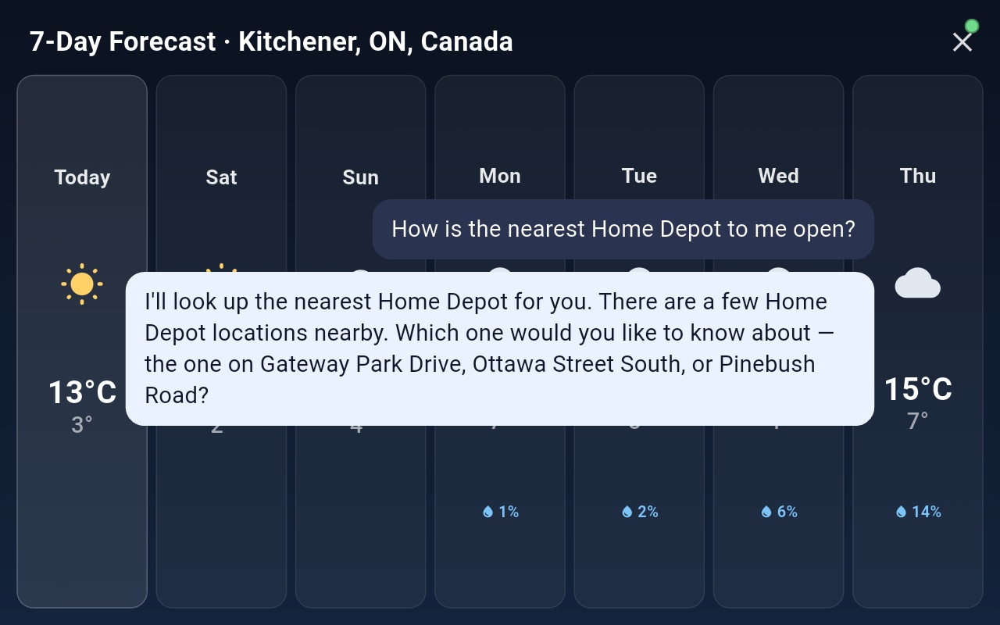

The soul of your home, given a voice.
Anamanti · AN-um un TEE
Say the wake word and just talk. Anamanti hears you in every room, thinks on a Mac in your house, shows its answer on screen as it forms, and speaks it back a sentence at a time.
From the Irish anam an tí, “the soul of the home.” Every stage can run on your Mac, elsewhere on your network, or in the cloud. You choose, and it shows you exactly what leaves the house.

from the end of your sentence to the spoken reply for everyday requests. About 2 s when the full model has to think.
for “turn off the kitchen lights”, “show me the front door” or “remember that…”. Pure-code fast paths handle them before any AI runs.
voice tools: timers, weather, recipes, places, music, radio, the camera, Home Assistant and more.
serves every display in the house and replies on the screen that asked.
What it is
A screen in every room, one brain in the house.
Anamanti has three parts. They find each other on your network automatically, so there are no IP addresses to type and no vendor account to create.

The brain · runs on a Mac
Anamanti Core
Hears, thinks and speaks. It handles end-of-speech detection, transcription, memory, the language model, tools and the voice, plus a console that shows every stage and where it runs.
Inside the Core →
The face · in each room
Anamanti Display
Your photos, the clock and the weather when idle. When you talk, it shows the live conversation, then recipes, timers, music, places and the front-door camera.
See the Display →
The ears · secondhand hardware
Repurposed Echo Show 8
A far-field microphone array, a good speaker and an 8-inch screen, reflashed with LineageOS. It's our favourite front end, but the Core works with any client that speaks its protocol.
Hardware & your own UI →Day to day
It doesn't just answer. It shows you.
Ask for a recipe and the steps stay on the counter. Timers count down where you can see them. Reminders from the Core slide in over your photos. These are all real screenshots from a running house.




What sets it apart
Built like a household member, not a gadget.
Conversation
A real back-and-forth
- Follow-ups need no wake word. The mic reopens after each reply and stays open while you keep talking.
- Barge in any time. Say the wake word mid-answer and it stops at once.
- Bilingual. It replies in English or Brazilian Portuguese, matching each turn.
Memory
It knows who's talking
- Voiceprints tell household members apart on every turn, on your Mac.
- Per-person memory. What you tell it is recalled for you, not for a guest.
- A knowledge graph of people, places and topics that you can browse, rename and delete.
Speed
Fast where it counts
- Fast paths handle lights and the camera with no model at all.
- A System-1 classifier answers timers and weather without the big model.
- Streaming throughout: text appears as it's written and speech starts at the first sentence.
Private by design, honest by default
You decide what leaves the house.
The wake word is detected on the display itself, so no audio leaves the room until you call it. After that, each stage is your choice: Whisper on your Mac or a cloud transcriber, Ollama or Claude, local embeddings or OpenAI.
The Core's overview page labels each stage as running On this Mac, Your network or Cloud, and lists exactly what is sent where. Keys stay in owner-only files on the Mac and are never shown back.
There's no vendor account, no hard-coded server and no always-open microphone to someone else's data centre.
Explore
Go deeper.
The Core
The engine and how a turn works
From the wake word to the spoken reply: speech detection, three speech-to-text engines, fast paths, tools, personalities and the admin console.
Read →The Display
The app in every room
The idle slideshow, live conversation, timers, recipes, music, notifications, voice enrolment and settings, built in Flutter on a Rust audio engine.
Read →Hardware
Echo Show, or anything else
Why a secondhand Echo Show 8 makes a great front end, and how you can bring your own screen instead.
Read →Integrations
What it connects to
Home Assistant, Spotify and multiroom audio, a Reolink camera, Google Photos, Places, Mapbox, calendars, shopping lists and family phones.
Read →Technology
Graphs, System-1 and speed
An embedded graph database for memory, a fast/slow dual-process design, zero-model fast paths and Rust nearly everywhere.
Read →Status
A working build, not a concept
Every screenshot on this site comes from a running house with three displays. Some features (bilingual mode, the phone companion) are built but still being rolled out.